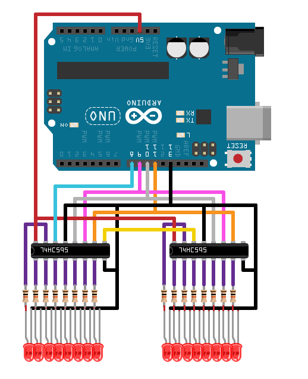

Control LEDs with 74HC595 Shift Register
This example shows how to use the MATLAB® Support Package for Arduino® Hardware to control multiple LEDs with two 74HC595 8-bit serial-in-parallel-out shift registers.
Contents
Hardware Requirements
- Arduino board
- Sixteen LEDs
- Two 74HC595 8-bit serial-in-parallel-out shift registers
- Sixteen 300-1K ohm resistors
- Breadboard and wires
Hardware Setup
Connect LEDs and 74HC595 shift registers to Arduino hardware:
- Connect Vcc pin on 74HC595 to 5V pin on Arduino hardware.
- Connect GND and OE pins on 74HC595 to GND pin on Arduino hardware.
- Connect DS or SER pin on 74HC595 to digital pin 8 on Arduino hardware.
- Connect SHCP or SRCLK pin on 74HC595 to digital pin 9 on Arduino hardware.
- Connect STCP or RCLK pin on 74HC595 to digital pin 10 on Arduino hardware.
- Connect MR or SRCLR pin on 74HC595 to digital pin 11 on Arduino hardware.
- Connect an LED through a resistor to each output of Q0-Q7 or QA-QH pins on the two 74HC595 shift registers.

Create Shift Register Object
Create an arduino object, and include the ShiftRegister library.
a = arduino('COM7', 'Uno', 'Libraries', 'ShiftRegister')
a =
arduino with properties:
Port: 'COM7'
Board: 'Uno'
AvailablePins: {'D2-D13', 'A0-A5'}
Libraries: {'ShiftRegister'}
Create shift register object, specifying the connected data pin, clock pin, latch pin, and reset pin.
dataPin = 'D8'; clockPin = 'D9'; latchPin = 'D10'; resetPin = 'D11'; register = shiftRegister(a, '74HC595', dataPin, clockPin, latchPin, resetPin)
register =
shiftRegister with properties:
Model: '74HC595'
DataPin: 'D8'
ClockPin: 'D9'
LatchPin: 'D10'
ResetPin: 'D11'
Light Up LEDs
To turn on the LEDs one after another, run the following command,
sequenceTable = tril(ones(16)); for count = 1:16 write(register, sequenceTable(count,:), 'uint16'); pause(0.5); end
To turn off all LEDs at once, call reset on the shift register object,
reset(register);
Clean Up
When the connection is no longer needed, clear the shift register and arduino object.
clear register a